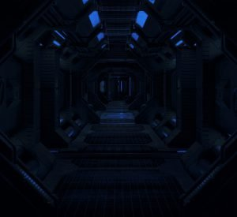

Dark gloomy corridors stretches in front of Engalo and Jennifer. Guns raised they slowly make their way down what looks to be the main corridor. Further down they see a double door, the metal floor plate groans under their feet as they approached it. A bleak light glows from the doors control panel. Engalo looks at Jennifer and pushes the open button on the panel. The door makes a hissing sound then opens slowly. The smell of rotting plants and a stale damp air hits them, looking trough the door a vast open space several kilometres wide and deep. Old dead and dying plants and trees can be seen littering the vastness. A pale bluish light emitting from some kind of plants softly illuminates the whole vista. Jennifer is the first one to walk out into the open space. The ground soft and wet under her feet. “Careful” Engalo whispers as he follows here out shifting his aim around to make sure there is nothing or noone there. They both points at a large building about 1 kilometre ahead of them with lit windows. “looks like someone’s home” Jennifer whispers and signals to move towards the building.After walking about 500 meters they hear a humming sound coming closer. Jumping to each side of the path Jennifer and Engalo duck for cover. A small drone flys overhead towards the building and disappears behind it. Engalo looks down in to the ditch he is now lying in, at his feet a big round object haf covered in dirt. A shell like structure at the top with what looks to be some kind of cell membrane on the sides. It’s about a meter across. Jennifer now standing over Engalo. “Are you alright” She whispers. “Yes, but have a look at this thing here… Where have I seen this before?” Engalo points down in to the ditch. Jennifer’s eyes widen. “My god… It’s a piece of an Unknown Artefact” Jennifer says. Realising she said it out loud she jumps down into the ditch with Engalo taking a watchful look around. They roll the round object over to see it’s been severed from the rest of the Artefact. As they touch the object a faint glow can be seen inside the cell looking membrane on the side. “First time seeing one of these up close” Engalo strokes his hand over the shell part of the artefact. A faint glow following his hand. Disturbed by the same humming sound as before they both cover down, but this time it’s to late. The drone hovering just over them a red grid patterned laser beam scans them both and the drone shoots in to the air and disappears once again. “Fuck!” Jennifer crawls back up on to the path. “Well, they know where here now at least…” She says looking down at Engalo as he follows up and on to the path again. “They already know we are here, they probably just didn’t know exactly where” Engalo dusts off his clothes. “Let’s go…” Engalo holsters his gun and starts walking decisive towards the building. Jennifer a little hesitant follows, gun in hand.
They reach the building and what looks to be the front entrance. The doors open with a soft swish and they enter a beautifully lit old earth style mansion hallway.
A small drone flies towards them and stops, a voice from the drone says: “I will be with you in a moment, please follow the drone and make yourself comfortable” The drone flies to the right and trough a doorway. Engalo and Jennifer looks at each other. Both saying the words “What the hell?” without making a sound.
A robotic voice sounds from the doorway the drone went through: “Please follow me” Engalo looks at Jennifer: “Let’s follow the drone” he says and starts walking after it. Jennifer holsters her gun and follows.
The drone leads them into a room with shelves stretching from the floor to the roof.Inside the shelves there is row on row with some kind of containers in different colors and on the edge pointing towards the room, most of them had words and phrases written on them. Engalo looks around; “Some kind of archive?” Jennifer stands for a moment speachless; “It’s a library, haven’t you seen old films from the twenty first century? It’s like this whole place is taken straight out from a movie” She walks over to the shelf and pulls out a book. The title reads: “The Devil in the White City” Jennifers eyes widen; “Engalo! This book is from 2003” Engalo looks down at the book and then up at Jen; “It’s only one exit, no windows and no other doors. I dont like it” Jennifer looks perplexed at Engalo and takes a quick overview of the room.
They both freezes for a second as they hear footsteps down the hallway outside the room. Engalo rests his hand on the holstered gun in his belt. Jennifer walks over to the other side of the room so they would have a wider angle of attack if it should come to that. A rather tall man enters. He has half long blonde hair, a well trimmed mustache and a small beard. Dressed in a dark blue suit with a dark blue and gold patterned cape. The man bows; “Greetings travelers, I am Byron Quintan. Welcome to my mansion. I am terrible sorry for the state my station are in, however it will be up and running again soon enough. Please sit” Byron gesticulates towards a round deep brown table with eight chairs around it. “I’ll rather stand” Jennifer answers quickly. Engalo looks over at Jennifer and back to Byron and the door behind him as he sits down at the table. Byron looks over the two of them and answers Jennifer kindly; “As you wish” He pulls out a chair and takes place on the opposite side of the table.
Byron taps the table top and a image of the docking bay where the Deptford Prize is docked appears between them. On the image you could clearly see four people connecting a fuel hose to the ship. Engalo looks up at Byron “We don’t need any fuel, we topped up on the star when we entered the system” Byron zooms in on the men working in the docking bay; “I’m sorry, you misunderstand… You might have noticed that the systems on this station is not working at full capacity? I must ask your forgiveness, but we will take most of the fuel from your ship…” Jennifer draws her gun slowly. “Please lady, we will leave you enough fuel to go back to the star and refuel. We are not savages or simple pirates. Look at it as a docking fee” Jennifer holsters her gun again as Engalo makes a downwards motion with his hand. Engalo looks back at Byron; “I’m Engalo and this fine lady over here is Jennifer. I’m sorry, but what is this place?” Byron leans back; “It’s a space station, didn’t you notice?” Byron smiles as if he has told a good joke; “What you see here is the first and only Wheel station. Made by the Dark Wheel back in 3127. A turbulent time for the core worlds, when the Dark Wheel needed a calm place to…let’s say, hang out. We are for the most part forgotten now, only a myth, even within the Dark Wheel itself. We have been running on solar cell power for many years now. Only using power for the most crucial systems, until you now come along with some precious Hydrogen. You see, there is no ships on the station now, only yours and therefore that is the only means we now have to get the hydrogen we need to again make this station operational. However the hydrogen from your ship will be more than enough for us to move the station closer to the star so we could scoop what we need for the rebuild” Engalo stairs at the man in front of him; “Are you Dark Wheel?” “Yes” Byron answers.
Engalo looks at Jennifer; “It’s incredible, here we are deep in space, far away from any civilised space and the first thing we run in to is a Dark Wheel space station!” Engalo looks back at Byron while raising from his chair; “Take the hydrogen you need, and we will be on our way” Engalo starts to walk towards the hallway. “Not so fast” Byron says in a deep voice. Engalo stops resting his hand on the gun. “I know that you are wanted by the Dark Wheel for some petty trifle and I know who you realy are Jennifer” Engalo turns around raising his eyebrow at Jen. Jennifer stands stiff gun in hand aiming at Byron. “It’s time to leave” Jennifer says as she slowly walks toward the door. Engalo unholsters his gun, walks out of the library and in to the hallway. “No guards, no drones” Engalo says. Jennifer follows aiming at Byron the whole way. “You cant escape your past Jennifer!” They hear behind them as they run out of the mansion. “Look for drones” Engalo says. They quickly walks down the same path they came in, constantly looking for threats. “Do we have a plan?” Engalo asks. “Yes! Get back to the ship and then get the hell outta here” Jennifer answers clearly agitated. “Mind telling me what that was all about?” Engalo places a hand on Jen’s shoulder stopping her; “The dock will probably be full of armed forces trying to stop us. It’s easyer there than trying to stop us here. If we are realy going to shoot our way out of here, I need to know why” Engalo looks in to Jennifer’s eyes. Her eyes looking every other direction than back at Engalo for a little while; “It’s… It’s complicated” Engalo stairs at Jen; “You have to tell me Jennifer” Jennifer sits down on some stairs near them. Suddenly bright lights flicker and then lights floods the whole dome, brown water starts to splash from the the fountain just adjacent from the stair Jen is sitting on. Engalo looks around, it’s clear that this once was a lavish green beautiful place, now overgrown with some plant life Engalo had never seen before and dead trees and plants everywhere in between. Gardening drones starts buzing around them washing fountains and paths and removing old and unknown plant life. Engalo holsters his gun. Jennifer does the same.
Jennifer stretches for Engalo’s hand and pulls him closer; “There is something I need to tell you…”
To be continued